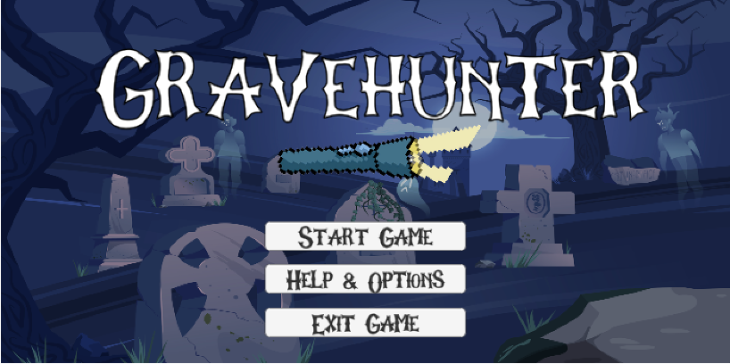
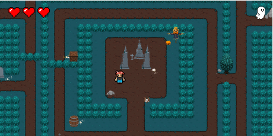

GraveHunter is a retro, Halloween themed action maze game. The game follows the main character who wakes suddenly in a maze-like graveyard that is guarded by the Grim Reaper and his vengeful ghosts. In order to escape, the main character must release all the souls stuck in the graveyard before the evil ghosts catch him.
Roles
Individual project Coder and Game Developer
Duration
5 months Spring 2023
Tools Used
Unity
Controls, Features, and UI elements
Primarily keyboard input
Up, Down, Left and Right arrow keys to move
around the map
Mostly if statements for coding
Narrative Storyline that uses an array for typewriter effect
Waypoints
Colliders
Non-Diegetic UI (HUD) which include the lives tracker and point system

Challenges

Initial concept ideation: creating a compelling storyline, player, emenies and obstacles within an interesting setting
Figuring out enemy functions and whether they should chase or patrol, resulting in me doing a lot of research on AI and pathfinding.
Implementing user feedback to make instructions more clear and adding context clues, as well as increasing user feedback
Future Iterations
Implementing a larger map that unlocks new areas as levels progress
Adding more levels with different enemies with increasingly effective health damages
Including side quests so that there are more goals to complete while still avoiding the enemies
Executing smoother transitions and adding more game interactions